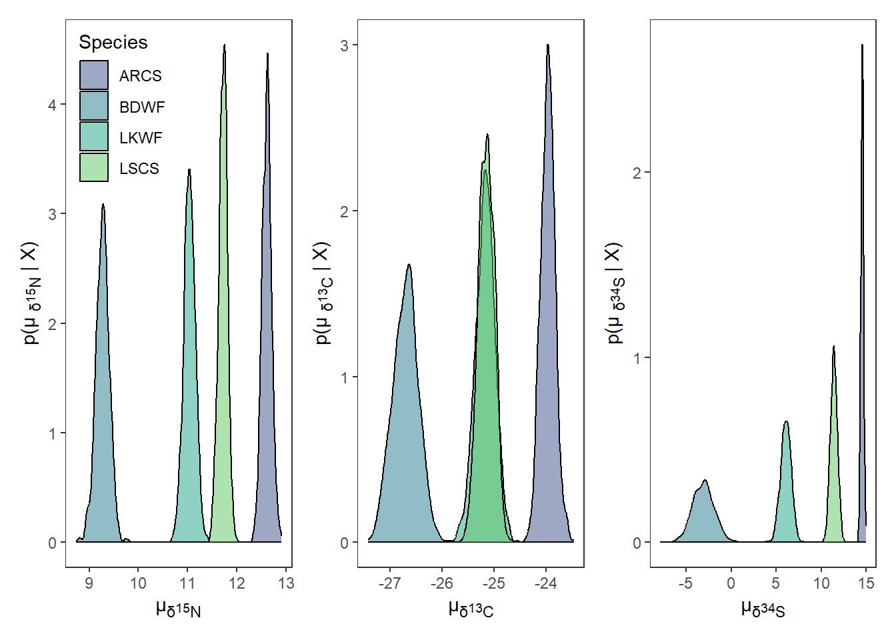
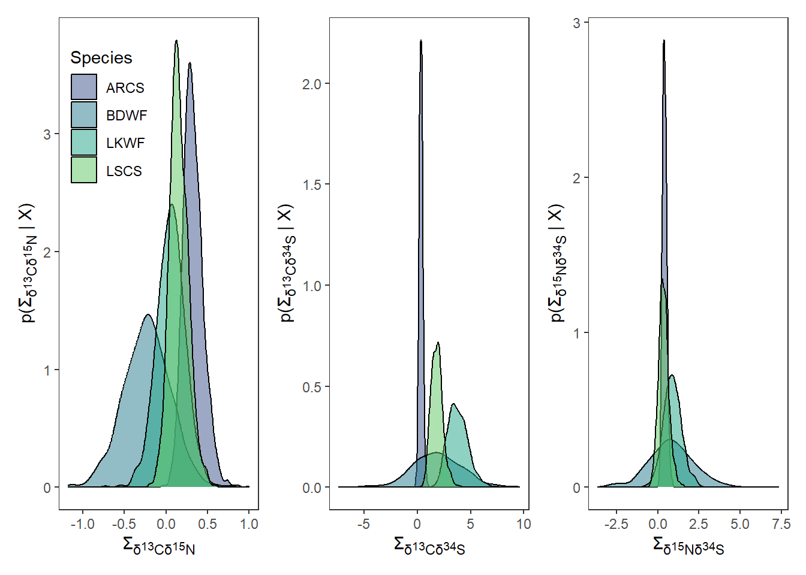

{
library(dplyr)
library(ellipse)
library(forcats)
library(ggplot2)
library(ggtext)
library(glue)
library(here)
library(lemon)
library(nicheROVER)
library(purrr)
library(patchwork)
library(readr)
library(tidyr)
}Trophic Niche Size and Overlap
stable isotopes
Trophic dynamics
food webs
Our Objectives:
The purpose of this vignette is to use {ggplot2} to visualize estimates of trophic niche size and overlap of multiple freshwater fish. This vignette can be used for additional purposes including estimating niche size and overlap among different groups of aquatic and/or terrestrial species. Furthermore, niche size and overlap of different behaviour types of the same species indicated through acoustic telemetry (e.g., differences in habitat occupancy).
Step 1: Bring assess trophic niche data
For the purpose of the vignette we will be using the fish dataframe that is available within {nicheROVER}. We will remove \(\delta\)34S for simplicity of the vignette. If more than two isotopes or metrics are being used to compare niche size and overlap, you can make plots using dplyr::group_split(), purrr:map(), and facet_grid(). we will first use the function clean_names() to clean up column names and remove \(\delta\)34S column.
df <- fish %>%
janitor::clean_names() If there are any isotopic values that did not run and are NA, they will need to be removed because {nicheROVER}’s functions will not accommodate values of NA.
Step 2: Estimate posterior distribution with Normal-Inverse-Wishart (NIW) priors.
We will take 1,000 posterior samples for each group
nsample <- 1e3We wlll then split the dataframe into a list with each species as a dataframe object within the list, We will then iterate over the list, using map(), to estimate posterior distribution using Normal-Inverse-Wishart (NIW) priors.
fish_par <- df %>%
split(.$species) %>%
map(~ select(., d15n, d13c, d34s)) %>%
map(~niw.post(nsample = nsample, X = .))Step 3: Extract \(\mu\) values from list object containing posteriors
We will use a combination of map() and pluck() to first extract the list of posteriors for \(\mu\). We will extract each vector object from each the \(\mu\) of each species using imap() and convert them into a tibble
We then will merge each \(\mu\) dataframe together for each species using bind_rows(). We will add species name and sample_number back into the dataframe.
df_mu <- map(fish_par, pluck, 1) %>%
imap(~ as_tibble(.x) %>%
mutate(
metric = "mu",
species = .y
)
) %>%
bind_rows() %>%
mutate(
species = factor(species,
levels = c("ARCS", "BDWF", "LKWF", "LSCS"))
) %>%
group_by(species) %>%
mutate(
sample_number = 1:1000
) %>%
ungroup()We need to manipulate df_mu into long instead of wide format for the rest of the analysis. We will also add in a column that is the element abbreviation and neutron number to be used in axis labelling.
df_mu_long <- df_mu %>%
pivot_longer(cols = -c(metric, species, sample_number),
names_to = "isotope",
values_to = "mu_est") %>%
mutate(
element = case_when(
isotope == "d15n" ~ "N",
isotope == "d13c" ~ "C",
isotope == "d34s" ~ "S",
),
neutron = case_when(
isotope == "d15n" ~ 15,
isotope == "d13c" ~ 13,
isotope == "d34s" ~ 34,
)
)Step 4: Extract \(\Sigma\) values from list object containing posteriors
We will use a combination of map() and pluck() to first extract the list of posteriors for \(\Sigma\). We will extract each vector object from each the \(\Sigma\) of each species using imap() and convert them into a tibble
We will manipulate df_sigma from wide to long format. When doing so we create two columns, id and isotope, that identify the two isotopes that \(\Sigma\) is being estimated for.
df_sigma <- map(fish_par, pluck, 2) %>%
imap(~ as_tibble(.x) %>%
mutate(
metric = "sigma",
id = c("d15n", "d13c", "d34s"),
species = .y
)
) %>%
bind_rows() %>%
pivot_longer(cols = -c("id", "species", "metric"),
names_to = "isotope",
values_to = "post_sample"
) %>%
separate(isotope, into = c("isotopes", "sample_number"), sep = "\\.")We then need to remove $ values for when the two columns are the same isotope.
df_sigma_cn <- df_sigma %>%
filter(id != isotopes)We also need to manipulate df_sigma back to wide format to extract ellipses
df_sigma_wide <- df_sigma %>%
select(id:post_sample) %>%
pivot_wider(names_from = id,
values_from = post_sample)Step 5: Plot posterior distrubtion of \(\mu\) and $Sigma using {ggplot2}
df_sigma_cn <- df_sigma_cn %>%
mutate(
element_id = case_when(
id == "d15n" ~ "N",
id == "d13c" ~ "C",
id == "d34s" ~ "S",
),
neutron_id = case_when(
id == "d15n" ~ 15,
id == "d13c" ~ 13,
id == "d34s" ~ 34,
),
element_iso = case_when(
isotopes == "d15n" ~ "N",
isotopes == "d13c" ~ "C",
isotopes == "d34s" ~ "S",
),
neutron_iso = case_when(
isotopes == "d15n" ~ 15,
isotopes == "d13c" ~ 13,
isotopes == "d34s" ~ 34,
)
)
# ---- density plots ggplot ----posterior_plots <- df_mu_long %>%
split(.$isotope) %>%
imap(
~ ggplot(data = ., aes(x = mu_est)) +
geom_density(aes(fill = species), alpha = 0.5) +
scale_fill_viridis_d(begin = 0.25, end = 0.75,
option = "D", name = "Species") +
theme_bw() +
theme(panel.grid = element_blank(),
axis.title.x = element_markdown(),
axis.title.y = element_markdown(),
legend.position = "none"
) +
labs(
x = paste("\u00b5<sub>\U03B4</sub>", "<sub><sup>",
unique(.$neutron), "</sup></sub>",
"<sub>",unique(.$element), "</sub>", sep = ""),
y = paste0("p(\u00b5 <sub>\U03B4</sub>","<sub><sup>",
unique(.$neutron), "</sub></sup>",
"<sub>",unique(.$element),"</sub>",
" | X)"), sep = "")
)
p <- posterior_plots$d15n +
theme(legend.position = c(0.25, 0.84)) +
posterior_plots$d13c +
posterior_plots$d34s
p
sigma_plots <- df_sigma_cn %>%
group_split(id, isotopes) %>%
imap(
~ ggplot(data = ., aes(x = post_sample)) +
geom_density(aes(fill = species), alpha = 0.5) +
scale_fill_viridis_d(begin = 0.25, end = 0.75,
option = "D", name = "Species") +
theme_bw() +
theme(panel.grid = element_blank(),
axis.title.x = element_markdown(),
axis.title.y = element_markdown(),
legend.position = "none"
) +
labs(
x = paste("\U03A3","<sub>\U03B4</sub>",
"<sub><sup>", unique(.$neutron_id), "</sub></sup>",
"<sub>",unique(.$element_id),"</sub>"," ",
"<sub>\U03B4</sub>",
"<sub><sup>", unique(.$neutron_iso), "</sub></sup>",
"<sub>",unique(.$element_iso),"</sub>", sep = ""),
y = paste("p(", "\U03A3","<sub>\U03B4</sub>",
"<sub><sup>", unique(.$neutron_id), "</sub></sup>",
"<sub>",unique(.$element_id),"</sub>"," ",
"<sub>\U03B4</sub>",
"<sub><sup>", unique(.$neutron_iso), "</sub></sup>",
"<sub>",unique(.$element_iso),"</sub>", " | X)", sep = ""),
)
)
p4 <- sigma_plots[[1]] +
theme(legend.position = c(0.25, 0.8)) +
sigma_plots[[2]] +
sigma_plots[[4]]
p4